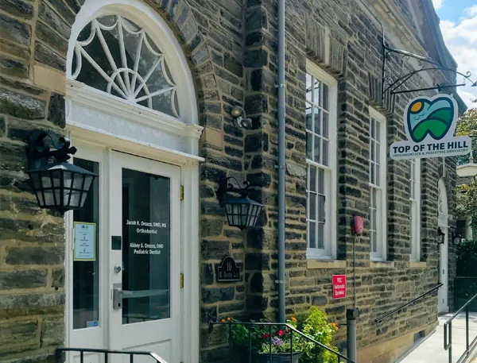

Reviews of the pediatric dentist and orthodontist at Top of the Hill
Google rates the practice 4.8 out of 5 from 147 reviews. Below are all 103 testimonials from the practice's own site, in the patients' words, and the office tour.
- Google, 12 Nov 2026
- 4.8 out of 5
- Google reviews
- 147
- Testimonials below
- 103
Assessment snapshot The rating is not a live Google integration; re-verify before launch.

Testimonials. In the patients' own words.

“Could not love TOTH more. So fast, so gentle and always a friendly face!”
“We have loved having Dr. Abbey as our dentist for years! We followed her to her new practice. Now, we are patients of Dr. Abbey & Dr. Jake!”
“Saved me a lot of pain and talked me through an emergency situation on a Sunday night. Highly recommend!”
“We love Dr. Abbey. She is so patient & kind!”
“Amazing staff, friendly, thank you!”
“Dr. Abbey was very quick & soothing for my daughter's first dental visit!”
“My son had a positive experience at Top of the Hill.”
“I'm happy. I loved the people.”
“He flicked out my tooth. It was cool.”
“It hurt a little bit, but you all did really good.”
“Amazing! Dr. Abbey is the best <3”
“We had a great experience today. Thank you very much.”
“Nurse Danielle was amazing with my nervous daughter.”
“GREAT JOB!”
“I think you did awesoome, but I don't like the sticky stuff you put on my teeth.”
“It was great.”
“AMAZING”
“We love Dr. Abbey and the whole staff.”
“You all did awesome.”
“It was aight.”
“You guys are hte best in the whole world. Thank you!”
“Stressed over NOTHING. Everyone's so friendly!”
“You guys are the best! Always so helpful & friendly.”
“Loved it! So shiny and clean.”
“You're amazing!! So well done. Keep it up!”
“Staff is very courteous and professional. My son loves visiting!”
“Your staff is very friendly and professional. The office is clean & well maintained.”
“Thank you. Thank you for seeing us on a moment's notice & thank you for being so kind to my baby!”
“You guys were very sweet & warm and fun.”
“Dr. Abbey was great. My little guy looks forward to it.”
“Everybody was really nice and helpful.”
“Great experience!”
“Great staff and experience every time.”
“Crying tears of joy! Very friendly, very stress-free.”
“The staff is so friendly. Thank you for being so patient.”
“I had a very awesome time! My new braces are very odd but nice!”
“You guys are awesome.”
“It was amazing! Just like always! My teeth are getting better!”
“You guys are awesome. Thank you for taking good care of my daughter's teeth.”
“Loved the toys!”
“I can't wait to get braces! Love everything about this dentist!!!!”
“The girls had an amazing &super friendly experience!”
“I got my braces off! I'm so happy!”
“Dr. Abbey was so calm and patient with my young kids. She made this such a great experience. They didn't want to leave!”
“I got my braces OFF!!!”
“My daughter was nervous as always & Dr. Abbey was patient as always. So great with kids!”
“Dr Abbey was gentle and walked us through our son's first check-up.”
“Great spot, great toys, Nice folks!!”
“Awesome! Made our son feel at ease. Great service!”
“So friendly, very welcoming. Great 1st experience!”
“Everyone is very nice-easy check-ups!”
“Really clean place. Everyone was super nice and respectful. All my concerns were addressed.”
From current website Pending practice review Reproduced as written, with the attribution shown on the practice's Testimonials page. Reuse, and whether children's names and ages are shown, needs the practice's approval.
More testimonials. Part two.

“Kind, friendly, fast and easy to speak with!”
“Fine.”
“I have clean teeth! And I don't have cavities! Really nice place.”
“Really patient and fast! Great experience.”
“It was very very fast and everyone was really nice.”
“I had a great time. I'm even getting braces!”
“Dr. Abbey is a saint and so patient! She is the best even with a hard patient!”
“Super fast, efficient and a happy patient!”
“Dr. Abbey is absolutely wonderful! We couldn't have asked for a better experience!”
“Terrific!”
“That was so cool! Dr. Abbey is so nice. I got a sticker.”
“This was so awesome! Dr. kept my son nice and calm.”
“Great dentists! :)”
“Awesome!”
“I feel good and happy about coming to see Dr. Abbey.”
“I liked how the dentists had a good sense of humor.”
“Really clean place. Everyone was super nice and respectful. All my concerns were addressed.”
“I didn't even notice when she took my teeth out!”
“We love Dr. Abbey”
“Loved it! Quick, friendly & on time.”
“Dr Jake was very nice!”
“I love this place. It's my favorite dentist place ever!!!”
“I really like how you don't get your gums ripped out like u do at other places.”
“You guys are awesome!!!”
“I like how nice you are.”
“Excited about our pretty smiles!”
“I like your kinds of toothpast (sic). Love, Dominic S.”
“We had an excellent visit!”
“I have to say I was nerves (sic) at first but at the end I thought it was really great.”
“We love everything about TOTH! So convenient, accommodating, professional and wonderful!”
“Dr. Abbey was warm, wonderful and kind. Great experience!”
“Mrs. Abbey was so nice. Everybody was polite and kind.”
“I enjoyed my visit!”
“I really like it here. The doctors are soooo nice.”
“I did not feel a thing.”
“I really like my new colors for my braces!”
“I think that they were really fast and didn't hurt at all!”
“It was very good.”
“Dr. Abbey rocks!”
“I really want to go here again!”
“Excellent visit!”
“Love our experience with Dr. Abbey! My girls loved their experience & had a blast!”
“It's awesome!”
“Fantastic visit- Love Dr. Abbey & all the staff. Thank you!”
“Everyone is so nice! My kids had a great experience!”
“Thanks for being so patient! Great with kids.”
“Great friendly doctor and staff.”
“My toddler does not like going to the doctors, but his crying was no problem for Dr. Abbey. She easily examined him and did it all with a smile! He went home happy and was asking to brush his teeth!”
“I wouldn't want anyone else to work in my daughters's mouths!”
“Great experience today!”
“Two great people!!”
Credentials of the team. As the practice states them.


- Dr. Abbey: Diplomate, American Board of Pediatric Dentistry; member, American Academy of Pediatric Dentistry
- Dr. Jake: David C. Hamilton research award; member, American Association of Orthodontists
- The practice states it is a certified Invisalign Teen® provider
From current website Pending practice review Not independently verified. The current site shows no other licence or certification badges. Confirm provider status and logo-use permission before launch.

Office photos. From the practice's own office tour.



From current website Pending practice review Photographs show patients; confirm releases. View the current office tour
Share your experience
Patients share kind words on a comment card from the front desk or by email, and the practice keeps every one on its testimonials page.